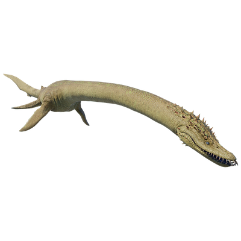

Useful Website
The carnivorous plesiosaur Elasmosaurus is easily recognisable thanks to its extended neck, which can grow up to 10m in length – roughly double the length of the rest of its body. Elasmosaurus’ streamlined body and paddle-shaped limbs allow it to swim quickly in search of fish and small reptiles to eat, grabbing prey with its long, sharp teeth. Its name translates to ‘thin-plate reptile’, referring to the plate-like bones in its chest and pelvis.
